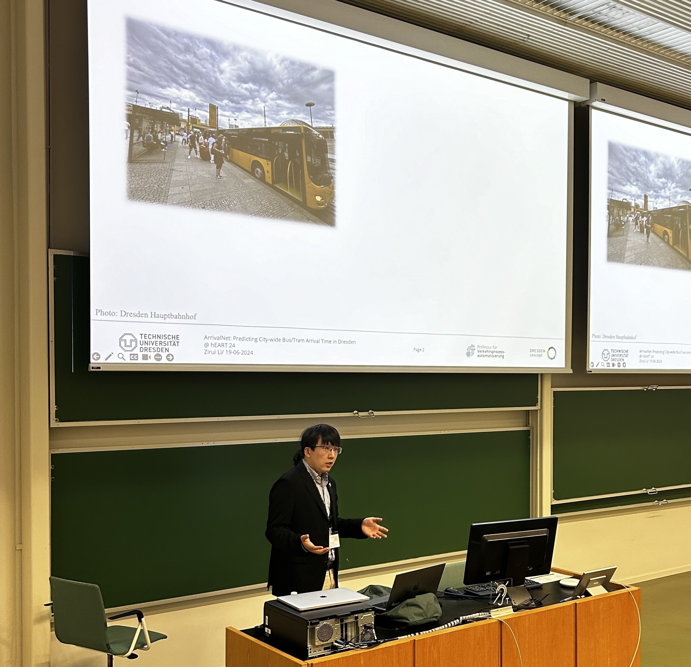
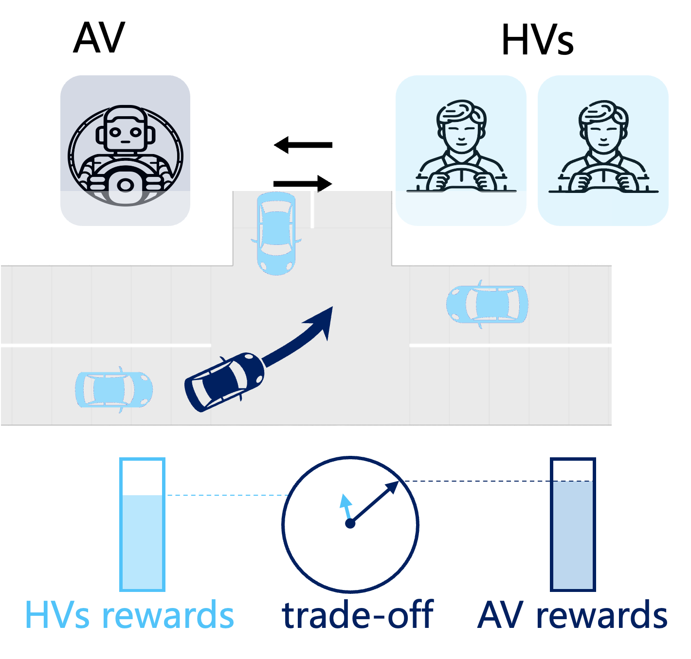

About Me

Zirui Li, Ph.D.
I just successfully defensed my Ph.D. thesis on Interactive Motion Planning of Automated Vehicles based on Spatiotemporal Risk Continual Learning at Beijing Institute of Technology, Beijing, China, under the supervision of Prof. Jianwei Gong. Prior to this, I was a visiting researcher in TU Delft and TU Dresden from June, 2021 to June, 2024, working with Prof. Meng Wang, Prof. Victor Knoop. Now, I am an incoming postdoctoral research associate at Nanyang Technological University.
I am on the academic job market! Please feel free to get in touch!
- Title: Postdoctoral Research Associate
- E-mail: ziruili.work.bit@gmail.com
- Institution: Beijing Institute of Technology
- Google Scholar: Click here
- ResearchGate: Click here
- LinkedIn: Click here
Research Interests
My research interests include data-driven interactive behaviour modelling and motion planning in dense environment, continual/lifelong learning in robotics (e.g., automated vehicles), traffic safety assessment and collective intelligence emergence in edge (Postdoctoral research).
Please refer to the Research Section for more details of my research.
I am open to research discussion and collaboration. Please feel free to reach out!
News
- May. 2025: I just successfully defensed my Ph.D. thesis.
- May. 2025: I was recognised as the IEEE ITSS Young Professionals Fellowship.
- Jan. 2025: I was selected for China Association for Science and Technology Youth Talent Support.
- Apr. 2025: Welcome to my homepage.
Biography
Education
Ph.D., Mechanical Engineering
Sep. 2019 - Jun. 2025
Beijing Institute of Technology (BIT), Beijing, China
Advisor: Prof. Jianwei Gong
Dissertation: Interactive Motion Planning of Automated Vehicles based on Spatiotemporal Risk Continual Learning
Awards: Excellent Doctoral Dissertation Seedling Fund
CSC Visiting Student
Jun. 2022 - Jun. 2023
TU Dresden, Germany
Advisor: Prof. Meng Wang
Topics: Interactive Behaviour modelling
CSC Visiting Student
Jun. 2021 - Jun. 2022
TU Delft, The Netherlands
Advisor: Prof. Meng Wang and Dr. Victor Knoop
Topics: Interactive Behaviour modelling
B.Eng., Xuteli Talent School (Mechanical Engineering)
Sep. 2015 - Jun. 2019
Beijing Institute of Technology (BIT), Beijing, China
Advisor: Prof. Jianwei Gong
Thesis: Analysis of influencing factors for driver decision-making at urban intersections
Awards: Outstanding Graduate and Outstanding Undergraduate Thesis
Work Experience
Part-time Researcher
Jun. 2023 - Jun. 2024
TU Dresden, Dresden, Germany
Advisor: Prof. Meng Wang
Topic: DNN-based Bus/tram arrival time prediction
Selected Research
Below are three selected interesting research I have done.

Interactive Motion Planning for Automated Vehicles
With the continuous advancements in information, sensing, and artificial intelligence technologies, unmanned vehicles as a new type of transport platform have made significant progress in fields such as autonomous delivery. Although current motion planning techniques can maintain a relatively high level of safety in closed environments, they still struggle to accurately represent the spatiotemporal risks induced by interactions among multiple traffic participants in dynamic and complex urban settings. This shortcoming leads to reduced efficiency in motion planning and undermines safety. To address these issues, this work focuses on modeling the interactive behaviors among multiple traffic participants, quantifying and integrating various types of risk, and designing motion planning algorithms. Accordingly, it proposes a spatiotemporal risk continual learning–based interactive motion planning method for unmanned vehicles. The “behavior prediction–risk assessment–motion planning” integrated approach aims to enhance driving safety in dynamically interactive environments through accurate spatiotemporal risk assessment.
Related Links:
Selected Publications
Preprints
Selected Journal Papers
Conference Papers
Books
Professional Services
Program Committee
- Working group leader, intelligent vehicle risk assessment working group under IEEE Standard Association
- Co-chair, Cooperative Decision-making for Connected and Automated Vehicles in ITS at IEEE ITSC 2023
- Associate Editor for IEEE IV 2023
- Chair, Social, interactive and safe behaviors for AVs: benchmarks, models and applications at IEEE IV 2023
- Organising committee and Proceedings editor, MFTS 2022
- Chair, Social and Interactive Behavior Modelling in ITS at IEEE ITSC 2021
Journal Reviewer
- IEEE Transactions on Intelligent Transportation Systems
- IEEE Transactions on Neural Networks and Learning Systems
- IEEE Transactions on Pattern Analysis and Machine Intelligence
- IEEE Transactions on Vehicular Technology
- IEEE Transaction on Transportation Electrification
- Accident Analysis & Prevention
- IEEE Robotics and Automation Letters
- IET Intelligent Transport Systems
- Frontiers of Information Technology & Electronic Engineering
- IEEE Transactions on Intelligent Vehicles
- IEEE/CAA Journal of Automatica Sinica
- IEEE Internet of Things Journal
- Transportation Research Part C: Emerging Technologies
- Transportation Research Part F: Traffic Psychology and Behaviour
Conference Reviewer
- IEEE Conference on Intelligent Transportation Systems (ITSC)
- IEEE Intelligent Vehicles Symposium (IVs)
- Transportation Research Board (TRB) Annual Meeting
- IEEE/RSJ International Conference on Intelligent Robots and Systems (IROS)
- IEEE International Conference on Robotics and Automation (ICRA)
Supervision
- Beijing Institute of Technology: Cheng Gong, Yunlong Lin, Chenxu Wen, Haowen Wang, Hailong Gong, Lianzhen Wei, Yangtian Yi, Xianqi He, Jingyi Xu, Yingqi Tan, Tairan Chen.
- TU Dresden: Fanyi Wei.